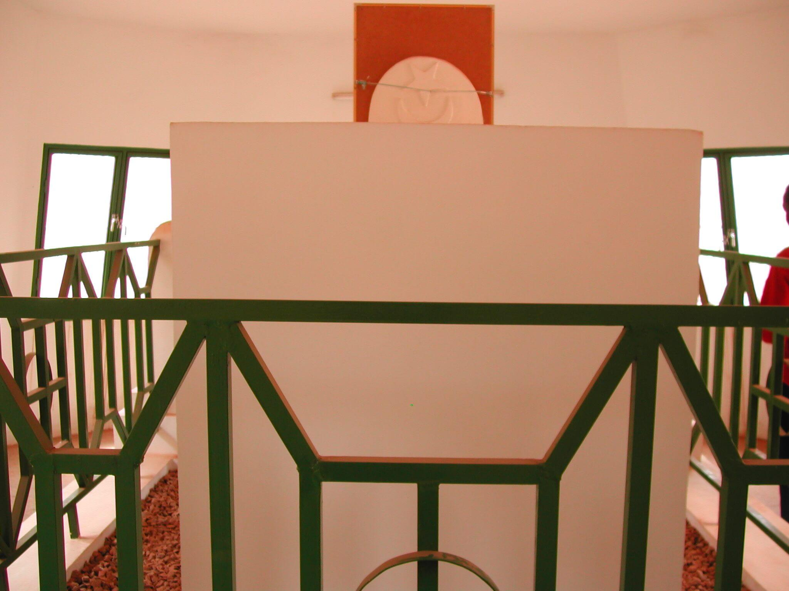
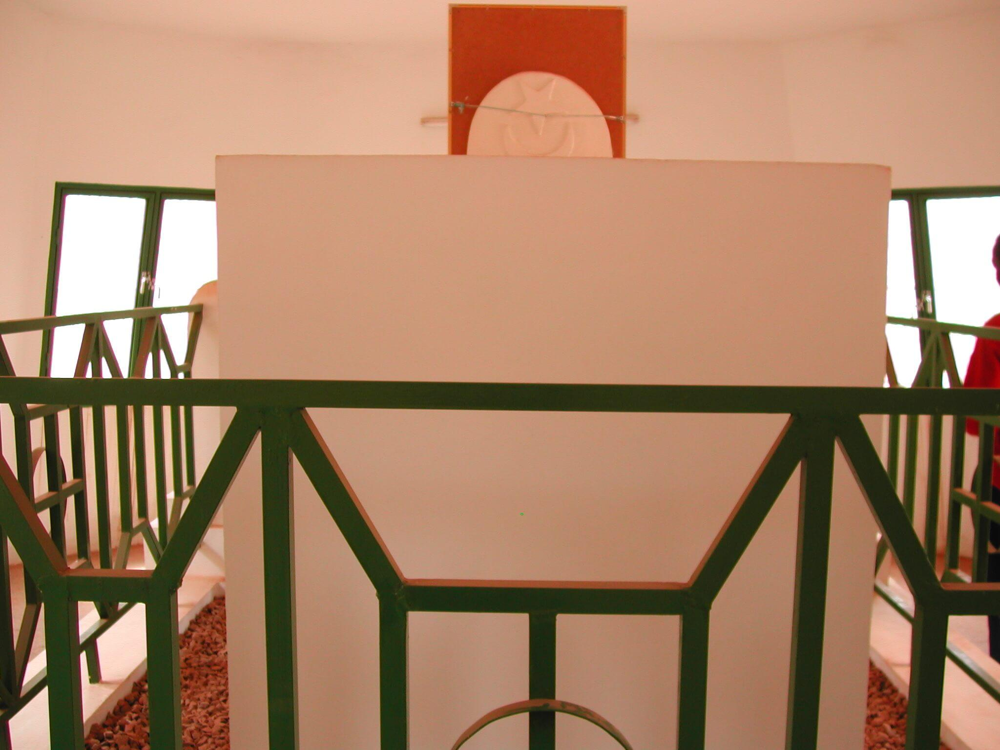

üìö Histoire
- üëë Qui √©tait Guimbi Ouattara ?
Guimbi Ouattara (1836 – 1919) fut la reine (ou “Laga”) de Bobo-Dioulasso, une cheffe politique et diplomatique remarquable. Issue de la famille royale du royaume de Bobo, elle est montée sur le trône à la suite de son frère, défunt souverain. Elle s’est illustrée par : Son sens politique très développé dans une époque marquée par la montée des tensions coloniales. Son rôle de médiatrice entre les différentes ethnies locales (Bobos, Dioulas, Peuls, etc.). Sa diplomatie habile avec les Français à l’arrivée du colonialisme, dans le but d’éviter des destructions dans sa ville. Sa capacité à maintenir la paix dans la région face à la pression des conquérants comme Samory Touré.
Après sa mort en 1919, Guimbi Ouattara fut enterrée avec les honneurs à Dioulassoba, le vieux quartier de Bobo-Dioulasso. Son tombeau est devenu un lieu de recueillement et de mémoire pour les habitants de la ville et au-delà. Le mausolée a été restauré au fil des années. Il est aujourd’hui : Un site de pèlerinage culturel et spirituel. Un symbole de la dignité des femmes africaines dans l’histoire. Un point d’ancrage pour la mémoire collective bobolaise et burkinabè.
Guimbi Ouattara incarne : La résistance africaine non-violente face à la colonisation. L’intelligence politique féminine dans un monde patriarcal. Une figure de leadership visionnaire, saluée tant au Burkina Faso qu’à l’étranger. Elle est honorée aujourd’hui par : Des écoles portant son nom. Des ouvrages historiques et romans. Des cérémonies officielles et culturelles à son mausolée.
üèõÔ∏è Architecture
Le mausolée de Guimbi Ouattara, situé dans le quartier historique de Dioulassoba à Bobo-Dioulasso, est un exemple remarquable d’architecture traditionnelle soudano-sahélienne, à la fois sobre, fonctionnelle et profondément symbolique. Construit principalement en banco — un mélange d’argile, d’eau et de fibres végétales — le mausolée s’intègre parfaitement à son environnement naturel et culturel. L’édifice est de forme rectangulaire, entouré d’un petit mur d’enceinte qui délimite l’espace sacré. Son toit plat ou légèrement voûté est soutenu par des poutres en bois de néré ou de karité, visibles à l’extérieur, ce qui est typique des constructions anciennes de la région. La porte, basse et faite de bois brut, impose à chaque visiteur une posture humble à l’entrée, marquant le respect dû à la défunte. À l’intérieur, la tombe de Guimbi Ouattara repose dans une cellule sobre, recouverte de tissus traditionnels et parfois entourée d’offrandes ou de symboles rituels. Le sol est recouvert de sable ou de graviers, et les murs, blanchis ou peints à l’ocre, sont parfois ornés de symboles protecteurs. L’ensemble reflète la sobriété et la spiritualité du lieu, où l’architecture n’est pas décorative mais profondément liée au sacré. Ce mausolée n’est pas seulement un tombeau : il est un espace de mémoire vivante, de transmission culturelle, et un témoin du rôle central qu’a joué Guimbi Ouattara dans l’histoire du Burkina Faso.
Importance culturelle
Le mausolée de Guimbi Ouattara revêt une importance culturelle majeure pour le Burkina Faso et pour toute la région ouest-africaine. Il constitue un lieu de mémoire vivant, symbolisant la sagesse, le courage et la diplomatie d’une femme exceptionnelle qui a su préserver la paix dans une époque troublée par les conflits internes et l’expansion coloniale. Plus qu’un simple tombeau, ce site est un espace sacré qui perpétue les valeurs traditionnelles de respect des ancêtres, de justice, de médiation et de leadership féminin. Il est aussi un point d’ancrage identitaire pour les populations de Bobo-Dioulasso, en particulier dans le quartier de Dioulassoba, où la mémoire orale de Guimbi Ouattara reste très présente. Le mausolée sert régulièrement de cadre à des cérémonies culturelles, à des rites de transmission, et à des visites symboliques de la part des descendants, des élèves, des chercheurs et des représentants de l’État. En ce sens, il incarne un patrimoine matériel et immatériel d’une grande valeur, témoignant de l’histoire locale tout en inspirant les générations futures à valoriser la place des femmes, la diplomatie traditionnelle, et la préservation des savoirs ancestraux africains.
Galerie


.jpeg) 

Informations pratiques
- Lieu : (Ajouter la région/village exact)
- Horaires : Ouvert tous les jours de 9h à 18h
- Entrée : Gratuite / Participation symbolique
- Guide local : Disponible sur place
Il est conseillé de visiter le site accompagné d’un guide local pour mieux comprendre l’histoire et les rituels associés.